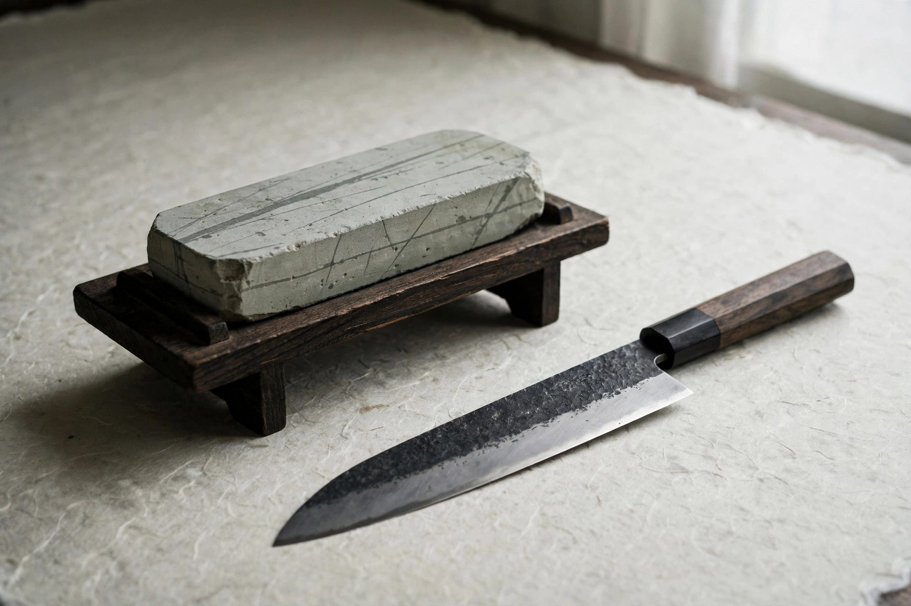
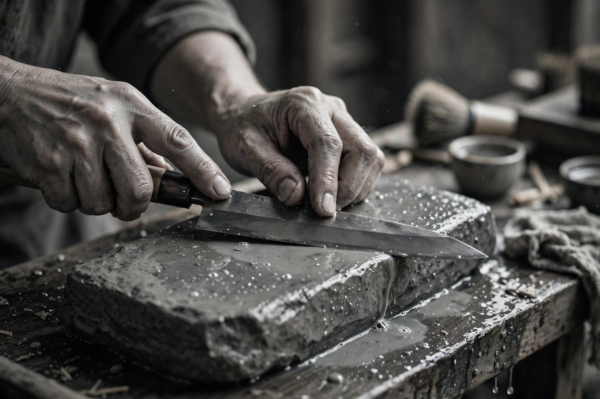
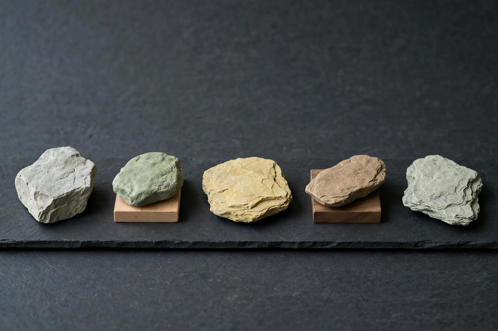
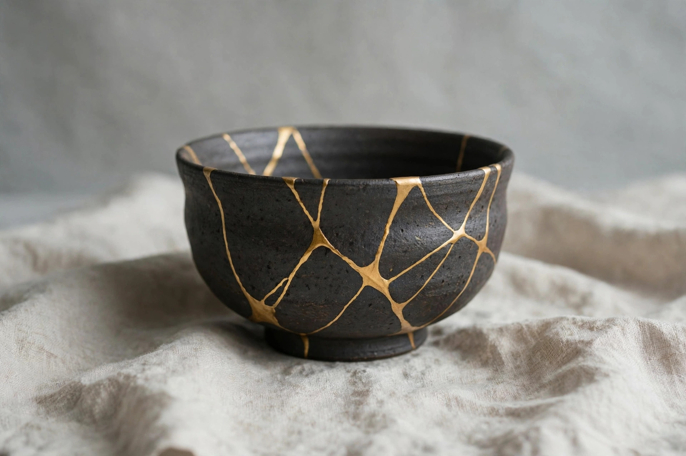

01 — APPRAISED STONES
鑑定済み天然砥石の販売
全数テスト済みの天然砥石を、硬度・推定粒度・毒筋の有無・テスト記録とともに販売します。国内の職人・料理人から、海外の和包丁愛好家まで、「失敗しない一枚」を届けます。

NATURAL WHETSTONES, TESTED & GUARANTEED
天然砥石は一枚ごとに違う。掘る時代が終わったいま、良い石に出会う方法は「誰がテストし、何を保証するか」にかかっています。研屋は、全数テストと数値化された記録で、石と人のあいだを取り持ちます。
CONCEPT
天然砥石の市場は、いま静かに姿を変えています。その変化を知ることが、良い買い物の第一歩です。

京都の名だたる砥山は、その多くがすでに閉山しています。いま市場に出回るのは、過去に採掘され、誰かの倉庫で眠っていた在庫と、放出品が中心。天然砥石は「採る産業」から「眠る在庫を掘り起こす産業」へ移りました。
同じ鉱山・同じ層から出た石でも、硬さも研ぎ味も一枚ごとに違います。産地の名前だけでは、その石があなたの刃物に合うかどうかは分かりません。
石の中に潜む有害な筋（毒筋）に刃が当たれば、仕上げた刃先は傷つきます。外観から完全には見抜けないこの差こそ、価格と満足を分ける最大の要因です。
私たちは扱うすべての石を実際に刃物で研ぎ、硬度をLv1〜5+の統一表記に数値化し、毒筋の有無とテストの記録を添えて販売します。売るのは石ではなく、「この石は、こうだった」という保証です。
BUSINESS
砥石の鑑定販売を核に、情報のデータベース化と、金継ぎ材料の安定供給まで。伝統工芸の「道具と材料」の流通を、静かに組み直します。
01 — APPRAISED STONES
全数テスト済みの天然砥石を、硬度・推定粒度・毒筋の有無・テスト記録とともに販売します。国内の職人・料理人から、海外の和包丁愛好家まで、「失敗しない一枚」を届けます。

02 — DATABASE
鉱山・層・硬度・価格帯で横断検索できる、標準化された砥石の記録庫を構築しています。売れた石も記録に残し続けることで、相場と知見の蓄積そのものを資産にします。

03 — KINTSUGI REFILL
生漆・砥の粉・金属粉・筆といった消耗材を、少量・適正な鮮度で繰り返し届けるリフィル供給。金継ぎキットの入口から、継ぎ続ける人の日常までを支えます。
04 — FOR PARTNERS
卸問屋・材料店・工房の皆さまとの連携を進めています。在庫の鑑定・情報整備・海外販路の提供を通じて、眠っている在庫と材料に新しい届け先を作ります。協業のご相談はお問い合わせからどうぞ。
NEWS
ウェブサイトを公開しました。砥石データベースはサンプルデータでの先行公開です。
硬度表記の統一基準（Lv1〜5+）と、テスト記録の公開方針を定めました。
金継ぎ材料のリフィル供給について、材料店との連携協議を開始しました。